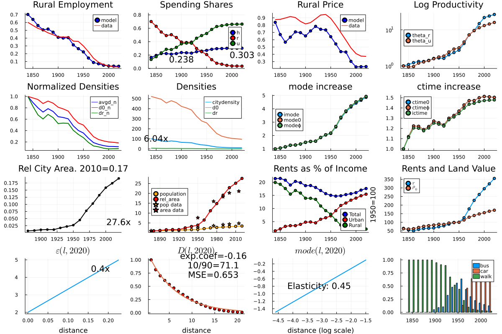
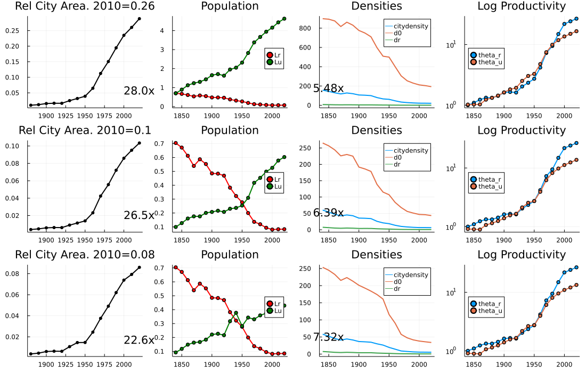
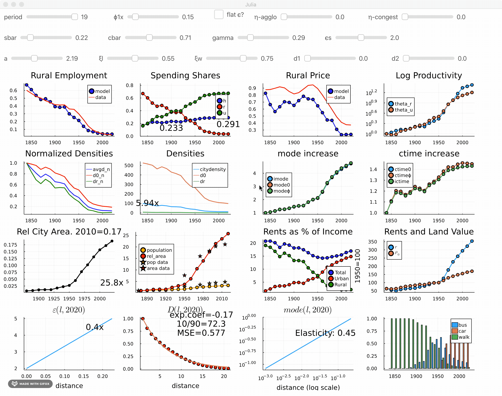

Interacting with the Model
The package provides an intuitive way to interact with the model. Using Interact.jl, we provide two dashboard views of both single region and country models. This is helpful to understand comparative static changes of a single parameter change.
Dashboards
Both region and country have an associated dashboard function which outputs a plot with multiple panels. The dash function for example prints a quick dashboard for a single region:
LandUse.dash(19)
LandUse.savefig("single-dash.png")
Similarly, the country dashboard for a 3-region country in period 5 can be obtained via
LandUse.cdash(3,5)
LandUse.savefig("k3-dash.png")┌ Warning: modifying θu data in periods 2 and 3 to be == 1.0
└ @ LandUse ~/.julia/dev/LandUse/src/country.jl:51
Interaction
The main interaction function is
LandUse.i0 — Functioni0()interact with the baseline single city version of the model. This basically calls dashboard(M::Vector{Region},p::Param,i::Int) after creating p from a set of user inputs.
and it opens a Blink.jl window like this one:
